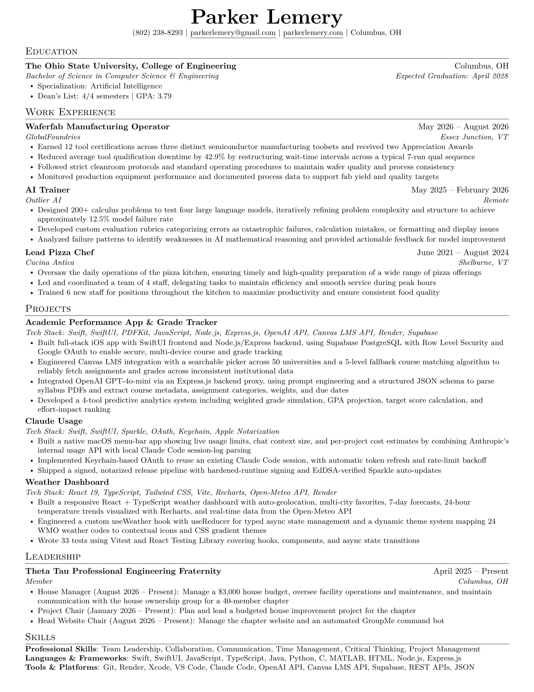

Computer Science & Engineering - Specializing in AI
I am an Ohio State student studying Computer Science & Engineering, passionate about
Machine Learning/AI and Software Development.
I'm a Computer Science & Engineering student at The Ohio State University (Class of 2028) specializing in Artificial Intelligence with a 3.79 GPA. I'm passionate about building AI-powered applications that solve real problems, from designing evaluation systems that expose weaknesses in large language models to developing full-stack iOS apps that help students optimize their academic performance.
My experience spans full-stack development, machine learning, and AI integration. As an AI Trainer at Outlier AI, I designed over 200 calculus problems with custom evaluation rubrics to test and improve large language models. I've built an Academic Performance App combining a Swift/SwiftUI frontend with a Node.js/Express backend, integrating OpenAI's GPT-4o-mini for syllabus parsing, Canvas LMS integration across 50 universities, and a predictive analytics system for grade simulation and GPA projection.
I'm experienced in Swift, Python, JavaScript, TypeScript, Java, and modern frameworks like SwiftUI, Node.js, and Express.js. I work with APIs including OpenAI, Canvas LMS, and REST architectures, deploy to platforms like Render, and have hands-on experience with prompt engineering and natural language processing.
This past summer, I worked as a Waferfab Manufacturing Operator at GlobalFoundries, earning 12 tool certifications across three semiconductor manufacturing toolsets and helping reduce average tool qualification downtime by 42.9% through restructured wait-time intervals. Getting hands-on with cleanroom processes and fab equipment sparked a real interest in the semiconductor industry, and it's a field I'd like to keep exploring alongside my software and AI work. I also serve as House Manager and Head Website Chair for my Theta Tau engineering fraternity chapter.
Currently seeking software engineering and AI/ML internship opportunities where I can contribute to innovative solutions and continue building impactful technology.

GPA: 3.79/4.0 | Dean's List: 4/4 Semesters
Specialization: Artificial Intelligence
Professional Skills: Team Leadership, Collaboration, Communication, Time Management, Critical Thinking, Project Management
Languages & Frameworks: Swift, SwiftUI, JavaScript, TypeScript, Java, Python, C, MATLAB, HTML, Node.js, Express.js
Tools & Platforms: Git, Render, Xcode, VS Code, Claude Code, OpenAI API, Canvas LMS API, Supabase, REST APIs, JSON
Full-stack iOS app with AI-powered grade tracking and document parsing. Integrated OpenAI GPT-4o-mini for natural language processing and multi-modal document processing using Apple's Vision framework for OCR. Planning to publish to the App Store in the future.
Built a responsive weather dashboard with React and TypeScript featuring city search, saved favorites, current conditions, 7-day forecast, and an hourly temperature chart. Includes auto-location detection, °F/°C toggle, and dynamic themes that change based on weather conditions.
A macOS menu-bar app showing live Claude usage: 5-hour and 7-day limit percentages, current chat context size, and per-project token/cost estimates. Reuses your existing Claude Code login via the macOS Keychain, pulling exact limits from Anthropic's usage endpoint with a local-estimate fallback. Code-signed with a Developer ID certificate and distributed through Apple's notarization pipeline, with in-app auto-updates powered by Sparkle.
Requires macOS 13+. Not notarized, so Gatekeeper will block it — run xattr -cr /Applications/ClaudeUsage.app in Terminal once after moving it to Applications (see the README for details).
Built a GroupMe chatbot with Python and Flask for a group chat, responding to commands for door codes, WiFi passwords, shift schedules, event calendars, meeting times, member lists, and form links. Also includes AI-powered fun commands powered by xAI's Grok model such as roasts, excuse generation, and vibe checks.
Lead Engineer for an assistive device project designing a ratchet mechanism to reduce upper body strain and improve wheelchair propulsion efficiency. Directed mechanical design, prototyping, and testing for reliable real-world use.
I'm currently seeking internship opportunities. Feel free to reach out!